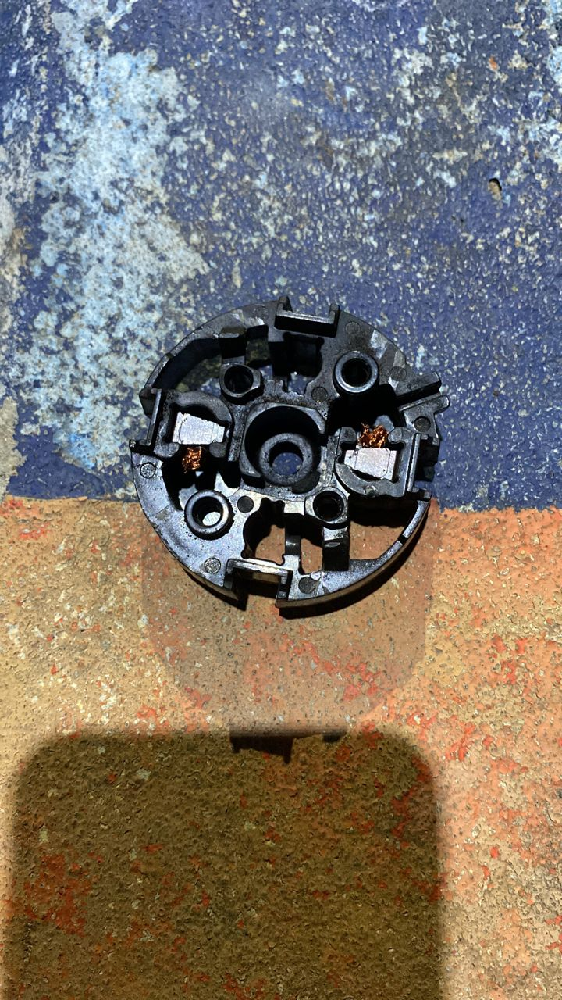
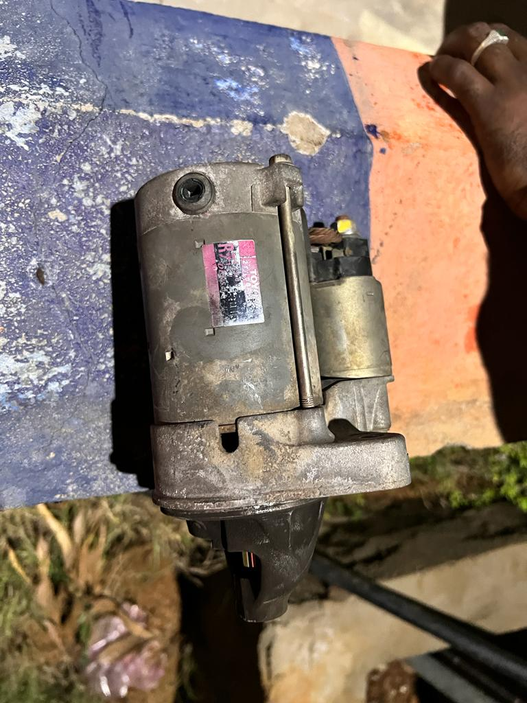
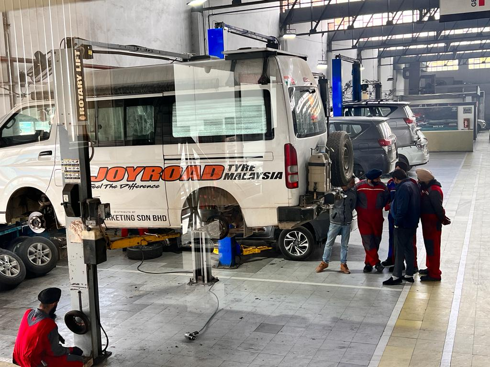
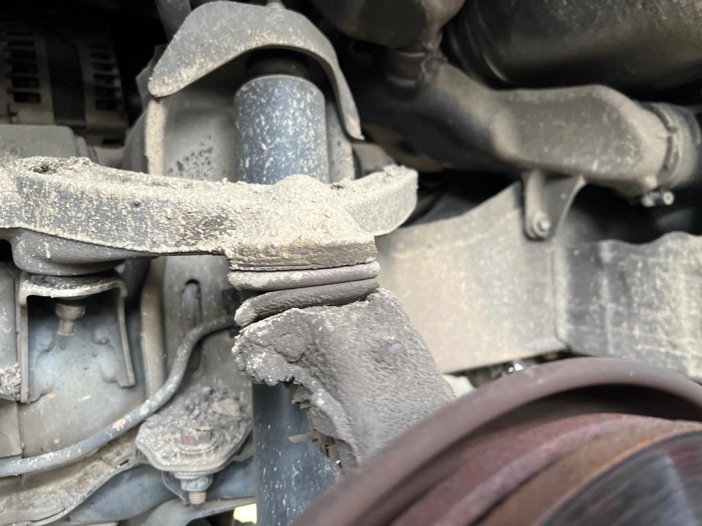
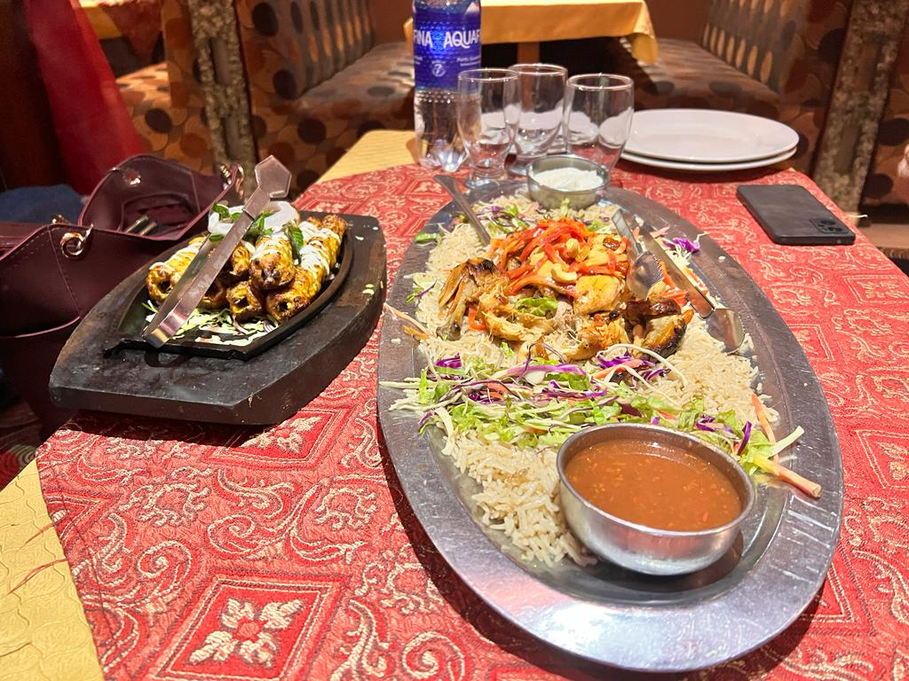
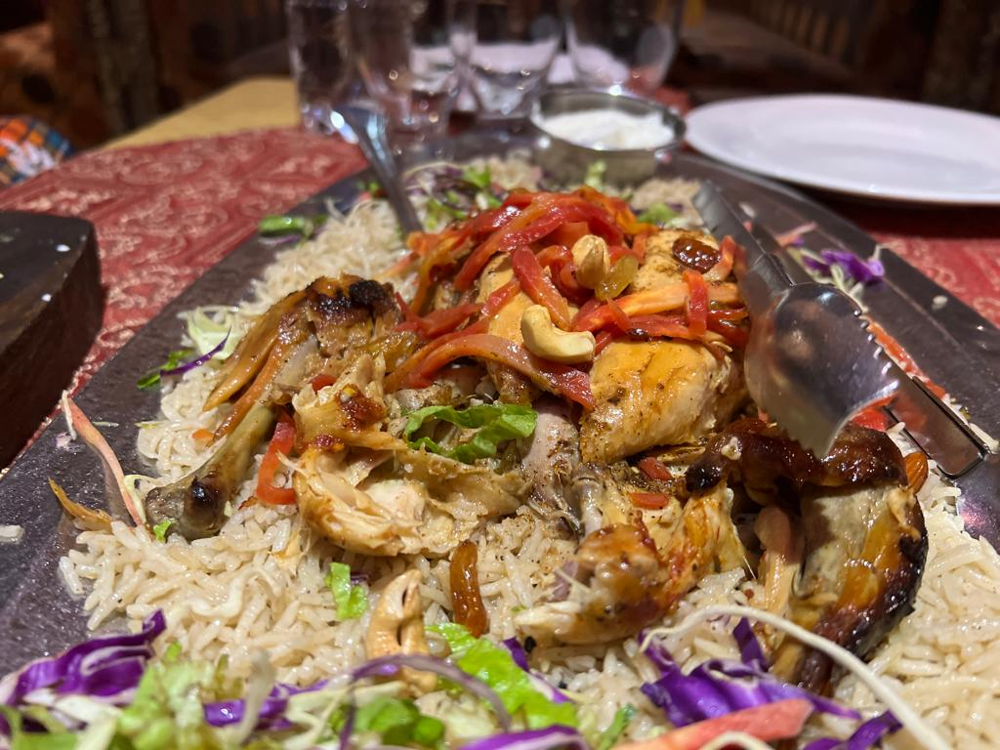
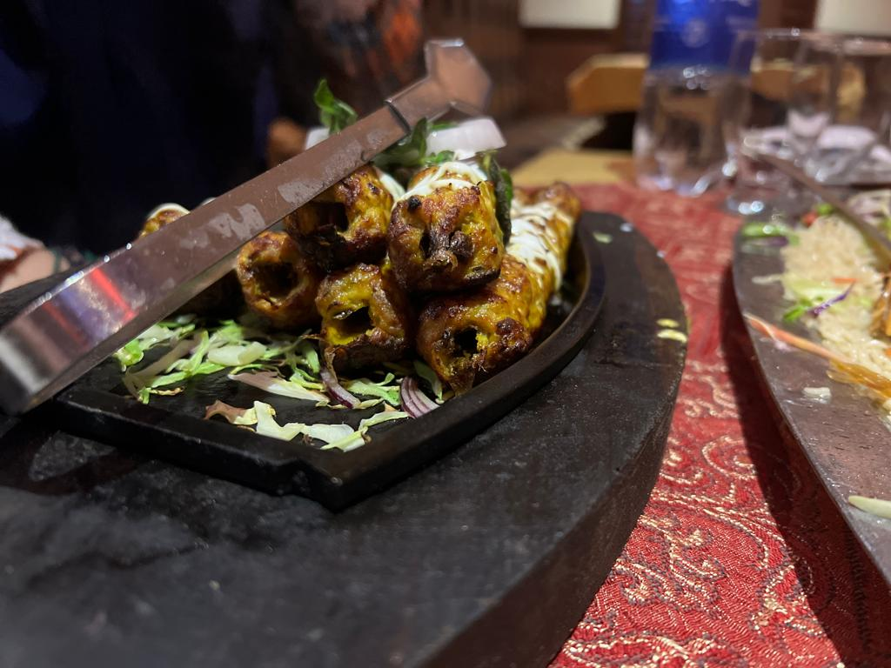
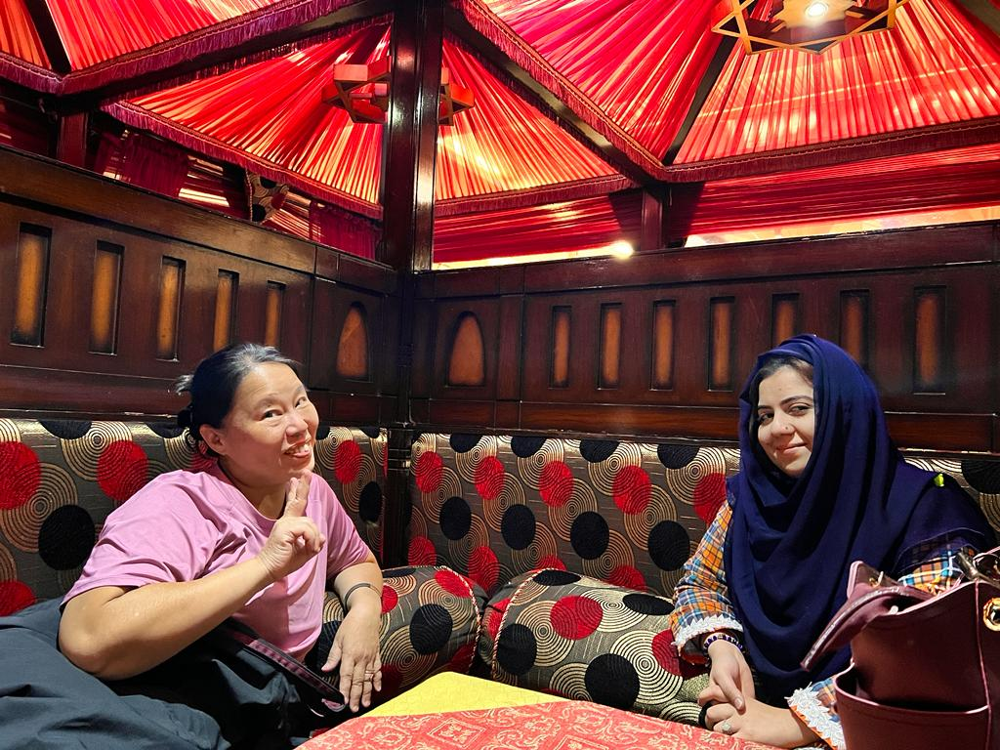
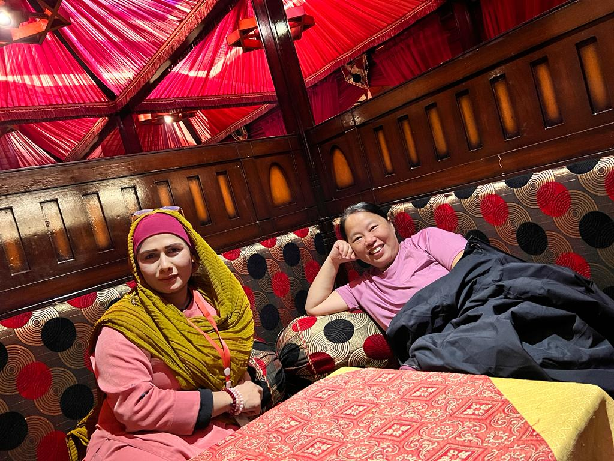
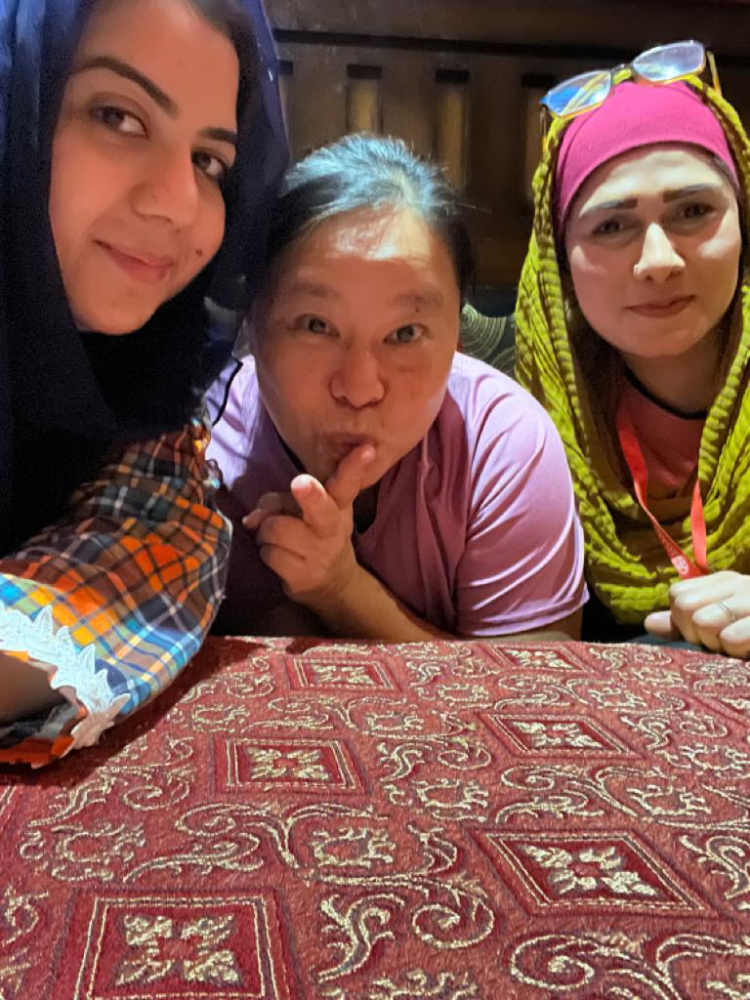

Real Story · 中文
不是每天都是 prince and princess。
这趟旅程当然有漂亮的风景、温暖的人、好吃的食物。 可是不是每天都是 prince and princess。 有些日子，路给你的不是浪漫，而是车子不能启动、零件坏掉、维修费、等待和焦虑。
10/11/2023，我刚开始 India 路段不久。 在加油之后，Toyotaki 突然不能启动。 我联系 Malaysia 的 mechanic，他怀疑是 starter 的问题。 后来 petrol station 的 staff 帮我找人，从大约 10km 外叫了 mechanic 过来。
他们花了几个小时帮我检查，确认到底是 battery 问题，还是其他地方出事。 最后证实 Malaysia mechanic 的判断是对的：starter issue。 我在那里修好了，花了 Rs3000，大约 RM169。


15/12/2023 · Toyota 3S Amritsar
Checked in India, but no genuine spare part.
On 15/12/2023, Toyotaki was checked at Toyota 3S Amritsar. The inspection found that the upper arm, tie rod, tie rod end, and wheel bearing had problems. I suspected the damage came from heavy impact during Nepal’s difficult road conditions.
But Toyota 3S Amritsar did not have the genuine spare parts for my campervan model. Because the journey had to continue, they advised me to go onward to Pakistan and seek repair there.


19/12/2023 · Toyota 3S Lahore
No genuine parts again, so OEM had to do.
After entering Pakistan, I reached Toyota 3S Lahore. They also said there were no genuine spare parts available for my campervan. But I had to continue the journey westward, so I said OEM parts were also acceptable.
On 19/12/2023, Toyota 3S Lahore repaired Toyotaki with OEM parts. The repair cost was about RM3000. It was not the ideal choice, but on an overland journey, sometimes the practical choice is the only way forward.
20/12/2023 · Lahore
The repair day ended with local dishes.
The sales PIC at Toyota 3S Lahore was a lady who tried her best to help. After the repair difficulty and all the stress, she even invited me to a local-style restaurant to enjoy Pakistani dishes on 20/12/2023.
This is why the archive cannot only show beautiful travel moments. The same chapter contains broken parts, workshop bills, missing spare parts — and then a warm dinner with people who tried to help.






English Memory Summary
The road was not always romantic.
On 10/11/2023, soon after starting the India journey, Toyotaki could not start after refuelling. Tuzi contacted her mechanic in Malaysia, who suspected a starter issue. With help from petrol station staff, a mechanic came from about 10km away, checked the vehicle for hours, and confirmed the starter problem. The repair cost Rs3000, about RM169.
On 15/12/2023, Toyota 3S Amritsar checked Toyotaki and found upper arm, tie rod, tie rod end, and wheel bearing problems, likely connected to heavy impact from Nepal’s difficult roads. Since genuine spare parts were not available, Tuzi was advised to continue to Pakistan.
On 19/12/2023, Toyota 3S Lahore also had no genuine parts, so Tuzi accepted OEM parts because the journey had to continue. The repair cost about RM3000. On 20/12/2023, a helpful Toyota 3S Lahore sales PIC invited Tuzi to local dishes after the repair stress.
Heart Statement
不是每天都是 prince and princess。
有时候，旅程是一颗坏掉的 starter、一支坏掉的 tie rod、一张很贵的维修单。 可是只要有人愿意帮你，路还是会继续打开。
Some days were not beautiful. But even repair days carried the hands of people who helped me continue.